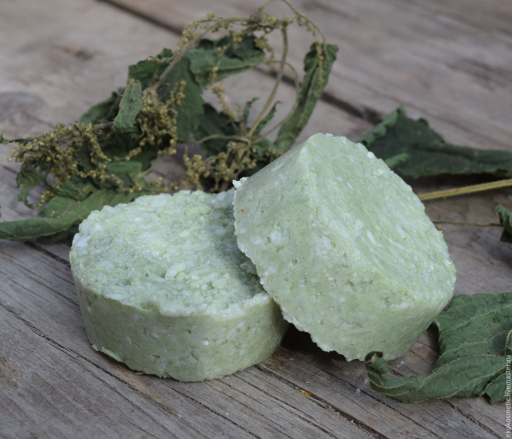
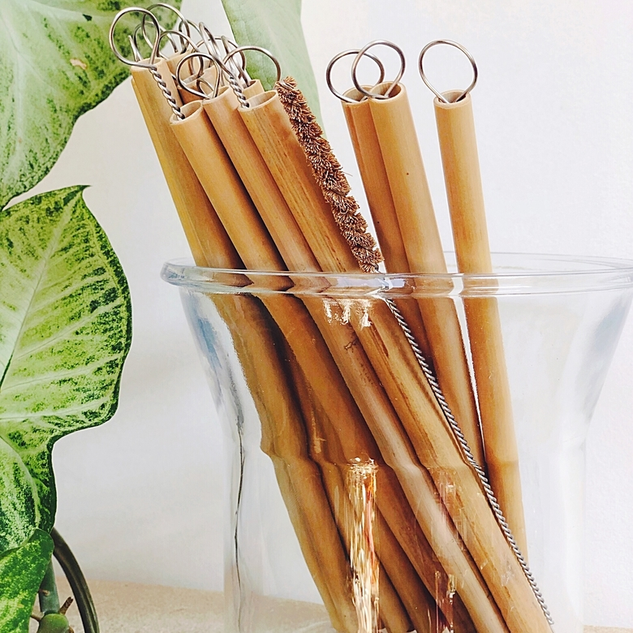
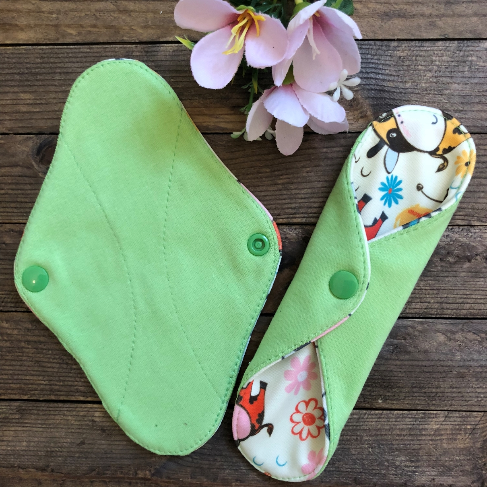

Попробуйте заменить самые простые одноразовые предметы, которые не перерабатываются. Например, откажитесь от пластиковых пакетов. Купите сумку из ткани или шопер и носите с собой на случай спонтанных покупок, но если вдруг вы забыли многоразовый пакет, то лучше тогда купите пластиковый, чем бумажный, так как большое потребление леса тоже вредит природе. Поэтому лучше по максимуму использовать пластиковый, чем один раз бумажный, который, к сожалению, быстро приходит в негодность
Постарайтесь покупать все на развес. Многоразовые экомешочки для овощей и фруктов избавят от необходимости использовать одноразовые пакеты. Их можно купить или сшить самостоятельно.И каждый день на планете выбрасываются тонны бутылочек, покупаемых один раз просто потому, что в них налит жидкий шампунь. Но если он твердый, то бутылочка не нужна. У твердого шампуня и бальзама много преимуществ: хватает надолго, удобно хранить в контейнере или жестяной банке, обычно это только экологический состав, который хорошо влияет на состояние волос. К тому же он позволяет свести расход упаковки к нулю. Обратите внимание на косметику без упаковки. Например, на мыло или твердый шампунь и бальзам. После использования жидких аналогов красивые пластиковые бутылочки
Выберите красивую многоразовую бутылку — металлическую, силиконовую или стеклянную — и берите воду с собой. Также пригодится многоразовый стакан или термокружка (пластиковая, бамбуковая, пробковая — на любой вкус). Привычка брать кружку из дома, как ключи или мобильник, выработается довольно быстро. К тому же таким образом вы сократите количество отходов в виде пластиковых бутылок и кофейных стаканов. Инициативу осознанного отказа от упаковки сегодня поддерживают многие. Например, участники движения My Cup, Please дают скидки и бонусы за напитки на вынос в свою кружку вместо одноразовых стаканов. Попросите у бармена в кафе не класть в напиток трубочку. Или захватите свою — стальную. Если вы обедаете не дома, возьмите в привычку брать с собой многоразовые приборы. Например, деревянные палочки или легкие стальные вилки и ложки. Чтобы они не пачкались в сумке, положите их в тканевый чехол. Во многих заведениях принято надевать бахилы, чтобы поддерживать чистоту. При этом после использования их сотнями выбрасывают в мусор. Все это не перерабатывается, а отправляется на свалку. Захватите с собой в поликлинику сменную обувь или многоразовые бахилы, в наборе есть непромокаемый мешочек, чтобы носить их в сумке.
Многоразовыми могут быть такие привычные гигиенические средства, как ватные диски, подгузники и прокладки. Например, многоразовые ватные диски после использования не выбрасывают, а стирают вместе с обычным бельем и используют вновь. Они долговечны и приятны на ощупь. А от ватных палочек лучше вовсе отказаться. Удобные многоразовые альтернативы есть у детских подгузников и женских прокладок. Кроме того, можно использовать силиконовые менструальные чаши. Они не чувствуются внутри, время от времени их нужно кипятить и хранить в специальном мешочке. А между использованиями достаточно ополаскивать.
На просторах интернета можно найти эко альтернативу почти всем вещам
Так же очень часто для упаковки и доставки еды на вынос используют пластиковые контейнеры, одноразовые приборы и пакеты. Вы можете уменьшить количество мусора, начав чаще готовить дома, практикуя slowfood. Либо выбирать доставку, использующую экоупаковку. В случае с едой на вынос не стесняйтесь приносить свою тару и просить упаковать вам еду в нее. Где-то даже дают скидку за свою тару.
danav8803@gmail.com